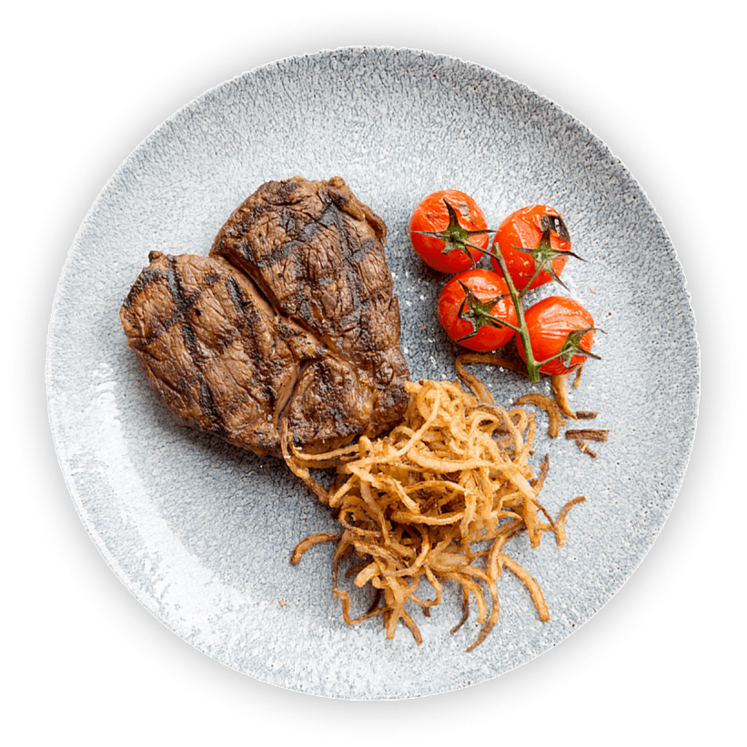

Design by persian design
steak with tomato
Salisbury Steak is made with ground beef that has been shaped into patties, while Swiss Steak is made with actual steak. For Swiss Steak, the beef is rolled or pounded and then braised in a



Salisbury Steak is made with ground beef that has been shaped into patties, while Swiss Steak is made with actual steak. For Swiss Steak, the beef is rolled or pounded and then braised in a